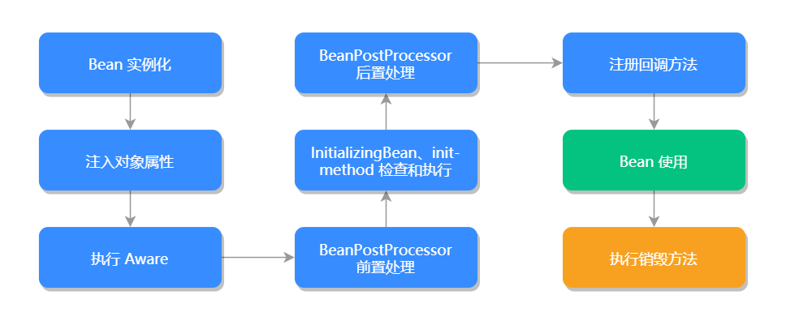

Spring Framework 已是公认的Java标配开发框架了，甚至还有人说Java编程就是面向Spring编程的，可见Spring在整个Java体系中的重要位置。
Spring 中包含了众多的功能和相关模块，比如 spring-core、spring-beans、spring-aop、spring-
context、spring-expression、spring-test等，本课时先从面试中必问的问题出发，来帮你更好的
Spring框架。
我们本课时的面试题是，Spring Bean的作用域有哪些？它的注册方式有几种？
典型回答
在Spring 容器中管理一个或多个Bean，这些Bean的定义表示为BeanDefinition对象，这些对象包含以下重要信息：
- Bean的实际实现类
- Bean的作用范围
- Bean的引用或者依赖项
Bean的注册方式有三种：
- XML配置文件的注册方式
- Java 注解的注册方式
- Java APl的注册方式
注册方式
1.XML 配置文件注册方式
1
2
3
4
| <bean id="person" class="org.springframework.beans.Person">
<property name="id" value="1"/>
<property name="name" value="Java"/>
</bean>
|
2.Java 注解注册方式
可以使用 @Component 注解方式来注册 Bean，代码如下：
1
2
3
4
5
6
| @Component
public class Person {
private Integer id;
private String name
}
|
也可以使用 @Bean 注解方式来注册 Bean，代码如下：
1
2
3
4
5
6
7
8
| @Configuration
public class Person {
@Bean
public Person person(){
return new Person();
}
}
|
其中@Configuration可理解为XML配置里的<beans>标签，而@Bean可理解为用XML配置里面的<bean>标签。
3.Java API 注册方式
使用 BeanDefinitionRegistry.registerBeanDefinition() 方法的方式注册 Bean，代码如下：
1
2
3
4
5
6
7
8
9
10
11
| public class CustomBeanDefinitionRegistry implements BeanDefinitionRegistryPostProcessor {
@Override
public void postProcessBeanFactory(ConfigurableListableBeanFactory beanFactory) throws BeansException {
}
@Override
public void postProcessBeanDefinitionRegistry(BeanDefinitionRegistry registry) throws BeansException {
RootBeanDefinition personBean = new RootBeanDefinition(Person.class);
registry.registerBeanDefinition("person", personBean);
}
}
|
Bean 的作用域一共有 5 个。
（1）singleton作用域：表示在Spring容器中只有一个Bean实例，以单例的形式存在，是默认的
Bean 作用域。
配置方式，缺省即可，XML的配置方式如下：
1
| <bean class="..."></bean>
|
（2）prototype 作用域：原型作用域，每次调用 Bean 时都会创建一个新实例，也就是说每次调用getBean() 方法时，相当于执行了 new Bean()。
XML 的配置方式如下：
1
| <bean class="..." scope="prototype"></bean>
|
（3）request 作用域：每次 Http 请求时都会创建一个新的 Bean，该作用域仅适应于WebApplicationContext 环境。
XML 的配置方式如下：
1
| <bean class="..." scope="request"></bean>
|
Java 注解的配置方式如下：
1
| @Scope(WebApplicationContext.SCOPE_REQUEST)
|
或是:
1
| @RequestScope(WebApplicationContext.SCOPE_REQUEST)
|
（4）session作用域：同一个Http Session共享一个Bean对象，不同的Session拥有不同的
Bean 对象，仅适用于WebApplicationContext环境。
XML的配置方式如下：
1
| <bean class="..." scope="session"></bean>
|
Java 注解的配置方式如下：
1
| @Scope(WebApplicationContext.SCOPE_SESSION)
|
或是：
1
| @RequestScope(WebApplicationContext.SCOPE_SESSION)
|
（5）application 作用域：全局的 Web 作用域，类似于 Servlet 中的 Application。
XML 的配置方式如下：
1
| <bean class="..." scope="application"></bean>
|
Java 注解的配置方式如下：
1
| @Scope(WebApplicationContext.SCOPE_APPLICATION)
|
或是:
1
| @RequestScope(WebApplicationContext.SCOPE_APPLICATION)
|
考点分析
在Spring中最核心的概念是AOP（面向切面编程）、loC（控制反转）、DI（依赖注入）等（此内容将会在下一课时中讲到），而最实用的功能则是Bean，他们是概念和具体实现的关系。和Bean相关的面试题，还有以下几个：
- 什么是同名Bean？它是如何产生的？应该如何避免？
- 聊一聊Bean的生命周期。
知识扩展
1.同名Bean 问题
每个Bean拥有一个或多个标识符，在基于XML的配置中，我们可以使用id或者name来作为
Bean 的标识符。通常Bean的标识符由字母组成，允许使用特殊字符。
同一个Spring配置文件中Bean的id和name是不能够重复的，否则Spring 容器启动时会报错。
但如果Spring加载了多个配置文件的话，可能会出现同名Bean的问题。同名Bean指的是多个
Bean 有相同的name或者id。
Spring 对待同名Bean的处理规则是使用最后面的Bean覆盖前面的Bean，所以我们在定义Bean
时，尽量使用长命名非重复的方式来定义，避免产生同名Bean的问题。
Bean的id 或name 属性并非必须指定，如果留空的话，容器会为Bean自动生成一个唯一的名称，这样也不会出现同名Bean的问题。
2.Bean 生命周期
对于Spring Bean来说，并不是启动阶段就会触发Bean的实例化，只有当客户端通过显式或者隐式的方式调用BeanFactory的getBean()方法时，它才会触发该类的实例化方法。当然对于BeanFactory 来说，也不是所有的getBean(）方法都会实例化Bean对象，例如作用域为singleton时，只会在第一次，实例化该Bean对象，之后会直接返回该对象。但如果使用的是ApplicationContext 容器，则会在该容器启动的时候，立即调用注册到该容器所有Bean的实例化方法。
getBean()既然是Bean对象的入口，我们就先从这个方法说起，getBean(）方法是属于
BeanFactory 接口的，它的真正实现是AbstractAutowireCapableBeanFactory的createBean()方法，而createBean(）是通过doCreateBean()来实现的，具体源码实现如下：
1
2
3
4
5
6
7
8
9
10
11
12
13
14
15
16
17
18
19
20
21
22
23
24
25
26
27
28
29
30
31
32
33
34
35
36
37
38
39
40
41
42
43
44
45
46
47
48
| @Override
protected Object createBean(String beanName, RootBeanDefinition mbd, @Nullable Object[] args)
throws BeanCreationException {
if (logger.isTraceEnabled()) {
logger.trace("Creating instance of bean '" + beanName + "'");
}
RootBeanDefinition mbdToUse = mbd;
Class<?> resolvedClass = resolveBeanClass(mbd, beanName);
if (resolvedClass != null && !mbd.hasBeanClass() && mbd.getBeanClassName() != null) {
mbdToUse = new RootBeanDefinition(mbd);
mbdToUse.setBeanClass(resolvedClass);
}
try {
mbdToUse.prepareMethodOverrides();
}
catch (BeanDefinitionValidationException ex) {
throw new BeanDefinitionStoreException(mbdToUse.getResourceDescription(),
beanName, "Validation of method overrides failed", ex);
}
try {
Object bean = resolveBeforeInstantiation(beanName, mbdToUse);
if (bean != null) {
return bean;
}
}
catch (Throwable ex) {
throw new BeanCreationException(mbdToUse.getResourceDescription(), beanName,
"BeanPostProcessor before instantiation of bean failed", ex);
}
try {
Object beanInstance = doCreateBean(beanName, mbdToUse, args);
if (logger.isTraceEnabled()) {
logger.trace("Finished creating instance of bean '" + beanName + "'");
}
return beanInstance;
}
catch (BeanCreationException | ImplicitlyAppearedSingletonException ex) {
throw ex;
}
catch (Throwable ex) {
throw new BeanCreationException(
mbdToUse.getResourceDescription(), beanName, "Unexpected exception during bean creation", ex);
}
}
|
doCreateBean 源码如下：
1
2
3
4
5
6
7
8
9
10
11
12
13
14
15
16
17
18
19
20
21
22
23
24
25
26
27
28
29
30
31
32
33
34
35
36
37
38
39
40
41
42
43
44
45
46
47
48
49
50
51
52
53
54
55
56
57
58
59
60
61
62
63
64
65
66
67
68
69
70
71
72
73
74
75
76
77
78
79
80
81
82
83
84
85
86
87
88
89
90
91
92
93
94
| protected Object doCreateBean(final String beanName, final RootBeanDefinition mbd, final @Nullable Object[] args)
throws BeanCreationException {
BeanWrapper instanceWrapper = null;
if (mbd.isSingleton()) {
instanceWrapper = this.factoryBeanInstanceCache.remove(beanName);
}
if (instanceWrapper == null) {
instanceWrapper = createBeanInstance(beanName, mbd, args);
}
final Object bean = instanceWrapper.getWrappedInstance();
Class<?> beanType = instanceWrapper.getWrappedClass();
if (beanType != NullBean.class) {
mbd.resolvedTargetType = beanType;
}
synchronized (mbd.postProcessingLock) {
if (!mbd.postProcessed) {
try {
applyMergedBeanDefinitionPostProcessors(mbd, beanType, beanName);
} catch (Throwable ex) {
throw new BeanCreationException(mbd.getResourceDescription(), beanName,
"Post-processing of merged bean definition failed", ex);
}
mbd.postProcessed = true;
}
}
boolean earlySingletonExposure = (mbd.isSingleton() && this.allowCircularReferences &&
isSingletonCurrentlyInCreation(beanName));
if (earlySingletonExposure) {
if (logger.isTraceEnabled()) {
logger.trace("Eagerly caching bean '" + beanName +
"' to allow for resolving potential circular references");
}
addSingletonFactory(beanName, () -> getEarlyBeanReference(beanName, mbd, bean));
}
Object exposedObject = bean;
try {
populateBean(beanName, mbd, instanceWrapper);
exposedObject = initializeBean(beanName, exposedObject, mbd);
} catch (Throwable ex) {
if (ex instanceof BeanCreationException && beanName.equals(((BeanCreationException) ex).getBeanName())) {
throw (BeanCreationException) ex;
} else {
throw new BeanCreationException(
mbd.getResourceDescription(), beanName, "Initialization of bean failed", ex);
}
}
if (earlySingletonExposure) {
Object earlySingletonReference = getSingleton(beanName, false);
if (earlySingletonReference != null) {
if (exposedObject == bean) {
exposedObject = earlySingletonReference;
} else if (!this.allowRawInjectionDespiteWrapping && hasDependentBean(beanName)) {
String[] dependentBeans = getDependentBeans(beanName);
Set<String> actualDependentBeans = new LinkedHashSet<>(dependentBeans.length);
for (String dependentBean : dependentBeans) {
if (!removeSingletonIfCreatedForTypeCheckOnly(dependentBean)) {
actualDependentBeans.add(dependentBean);
}
}
if (!actualDependentBeans.isEmpty()) {
throw new BeanCurrentlyInCreationException(beanName,
"Bean with name '" + beanName + "' has been injected into other beans [" +
StringUtils.collectionToCommaDelimitedString(actualDependentBeans) +
"] in its raw version as part of a circular reference, but has eventually been " +
"wrapped. This means that said other beans do not use the final version of the " +
"bean. This is often the result of over-eager type matching - consider using " +
"'getBeanNamesOfType' with the 'allowEagerInit' flag turned off, for example.");
}
}
}
}
try {
registerDisposableBeanIfNecessary(beanName, bean, mbd);
} catch (BeanDefinitionValidationException ex) {
throw new BeanCreationException(
mbd.getResourceDescription(), beanName, "Invalid destruction signature", ex);
}
return exposedObject;
}
|
从上述源码中可以看出，在doCreateBean()方法中，首先对Bean进行了实例化工作，它是通过调用createBeanlnstance()方法来实现的，该方法返回一个BeanWrapper对象。BeanWrapper对象是Spring中一个基础的Bean 结构接口，说它是基础接口是因为它连基本的属性都没有。
BeanWrapper 接口有一个默认实现类BeanWrapperlmpl，其主要作用是对Bean进行填充，比如填充和注入Bean的属性等。
当Spring完成Bean 对象实例化并且设置完相关属性和依赖后，则会调用Bean的初始化方法initializeBean()，初始化第一个阶段是检查当前Bean 对象是否实现了BeanNameAware、BeanClassLoaderAware、BeanFactoryAware等接口，源码如下：
1
2
3
4
5
6
7
8
9
10
11
12
13
14
15
16
| private void invokeAwareMethods(final String beanName, final Object bean) {
if (bean instanceof Aware) {
if (bean instanceof BeanNameAware) {
((BeanNameAware) bean).setBeanName(beanName);
}
if (bean instanceof BeanClassLoaderAware) {
ClassLoader bcl = getBeanClassLoader();
if (bcl != null) {
((BeanClassLoaderAware) bean).setBeanClassLoader(bcl);
}
}
if (bean instanceof BeanFactoryAware) {
((BeanFactoryAware) bean).setBeanFactory(AbstractAutowireCapableBeanFactory.this);
}
}
}
|
其中，BeanNameAware是把Bean对象定义的beanName设置到当前对象实例中；
BeanClassLoaderAware 是将当前Bean对象相应的ClassLoader注入到当前对象实例中；
BeanFactoryAware是BeanFactory 容器会将自身注入到当前对象实例中，这样当前对象就会拥有一个BeanFactory 容器的引用。
初始化第二个阶段则是BeanPostProcessor 增强处理，它主要是对Spring 容器提供的Bean实例对象进行有效的扩展，允许Spring在初始化Bean阶段对其进行定制化修改，比如处理标记接口或者为其提供代理实现。
在初始化的前置处理完成之后就会检查和执行InitializingBean和init-method方法。
InitializingBean 是一个接口，它有一个afterPropertiesSet()方法，在Bean初始化时会判断当前
Bean 是否实现了InitializingBean，如果实现了则调用 afterPropertiesSet()方法，进行初始化工作；然后再检查是否也指定了init-method，如果指定了则通过反射机制调用指定的init-method方法，它的实现源码如下：
1
2
3
4
5
6
7
8
9
10
11
12
13
14
15
16
17
18
19
20
21
22
23
24
25
26
27
28
29
30
31
32
| protected void invokeInitMethods(String beanName, final Object bean, @Nullable RootBeanDefinition mbd)
throws Throwable {
boolean isInitializingBean = (bean instanceof InitializingBean);
if (isInitializingBean && (mbd == null || !mbd.isExternallyManagedInitMethod("afterPropertiesSet"))) {
if (logger.isTraceEnabled()) {
logger.trace("Invoking afterPropertiesSet() on bean with name '" + beanName + "'");
}
if (System.getSecurityManager() != null) {
try {
AccessController.doPrivileged((PrivilegedExceptionAction<Object>) () -> {
((InitializingBean) bean).afterPropertiesSet();
return null;
}, getAccessControlContext());
} catch (PrivilegedActionException pae) {
throw pae.getException();
}
} else {
((InitializingBean) bean).afterPropertiesSet();
}
}
if (mbd != null && bean.getClass() != NullBean.class) {
String initMethodName = mbd.getInitMethodName();
if (StringUtils.hasLength(initMethodName) &&
!(isInitializingBean && "afterPropertiesSet".equals(initMethodName)) &&
!mbd.isExternallyManagedInitMethod(initMethodName)) {
invokeCustomInitMethod(beanName, bean, mbd);
}
}
}
|
初始化完成之后就可以正常的使用Bean对象了，在Spring 容器关闭时会执行销毁方法，但是
Spring 容器不会自动去调用销毁方法，而是需要我们主动的调用。
如果是BeanFactory 容器，那么我们需要主动调用destroySingletons()方法，通知BeanFactory
容器去执行相应的销毁方法；如果是ApplicationContext容器，那么我们需要主动调用
registerShutdownHook()方法，告知ApplicationContext 容器执行相应的销毁方法。
注：本课时源码基于 Spring 5.2.2.RELEASE。
小结
本课时我们讲了Bean的三种注册方式：XML、Java注解和JavaAPl，以及Bean的五个作用域：
singleton、prototype、request、session和application；还讲了读取多个配置文件可能会出现同名Bean的问题，以及通过源码讲了Bean执行的生命周期，它的生命周期如下图所示：.
